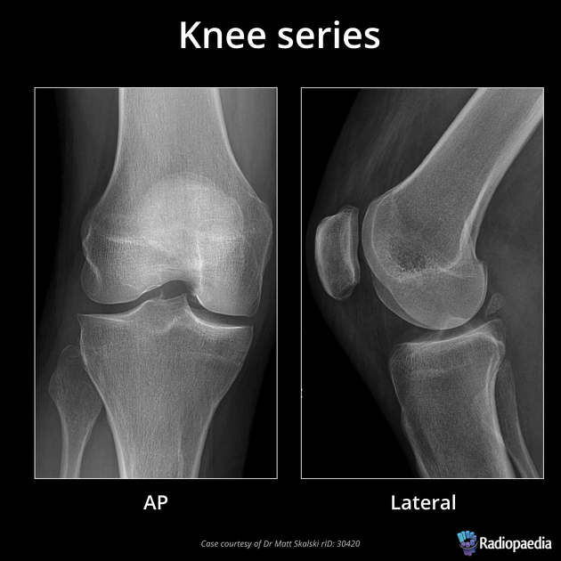

Medical Imaging Modalities
Last updated on 2024-10-15 | Edit this page
Overview
Questions
- What are the common different types of diagnostic imaging?
- What sorts of computational challenges do they present?
Objectives
- Explain various common types of medical images
- Explain at a high level how images’ metadata is created and organized
Introduction
Medical imaging uses many technologies including X-rays, computed tomography (CT), magnetic resonance imaging (MRI), ultrasound, positron emission tomography (PET) and microscopy. Although there are tendencies to use certain technologies, or modalities to answer certain clinical questions, many modalities may provide information of interest in terms of research questions. In order to work with digital images at scale we need to use information technology. We receive images in certain types of files, e.g., an x-ray stored at the hospital in DICOM format, but the image itself is contained in a JPEG inside the DICOM as a 2D-array. Understanding all the kinds of files we are dealing with and how the images within them were generated can help us deal with them computationally.
Conceptually, we can think of medical images as signals. These signals need various kinds of processing before they are ‘readable’ by humans or by many of the algorithms we write.
While thinking about how the information from these signals is stored in different file types may seem less exciting than what the “true information” or final diagnosis from the image was, it is necessary to understand this to make the best algorithms possible. For example, a lot of hospital images are essentially JPEGs. This has implications in terms of image quality as we manipulate and resize the images.
Below are a few summaries about various ultra-common imaging types. Keep in mind that manufacturers may have specificities in terms of file types not covered here, and there are many possibilities in terms of how images could potentially be stored. Here we will discuss what is common to get in terms of files given to researchers.
X-Rays
Historically, x-rays were the first common form of medical imaging. The diagram below should help you visualize how they are produced. The signal from an x-ray generator crosses the subject. Some tissues attenuate the radiation more than others. The signal is captured by an x-ray detector (you can think of this metaphorically like photographic film) on the other side of the subject.

As you can imagine if you only have one view in an X-ray every object in the line of radiation from the generator is superimposed on every object below it. Even in the days of film X-rays often two views would be made. In the case of chest X-rays these could be a posteroanterior(PA) view and a lateral view. In the case of joints the views may be specific, however remember that in each view objects in the same line between the generator and receptor will be superimposed.
image courtesy of Radiopaedia, author and ID on image
Modern x-rays are born digital. No actual “film” is produced, rather a DICOM file which typically contains arrays in JPEG files.
We could use the metaphor of a wrapped present here. The DICOM file contains metadata around the image data, wrapping it. The image data itself is a bunch of 2D-arrays, but these have been organized to a specific shape - they are “boxed” by JPEG files. JPEG is a container format. There are JPEG files (emphasis on the plural) in a single DICOM file which typically contain images of the same body part with different angles of acquisition.
We can take x-rays from any angle and even do them repeatedly, and this allows for fluoroscopy. Because fluoroscopy adds a time dimension to X-ray the data becomes 3-dimensional, possessing an X, Y and time dimension. Below is a fluoroscopy image of a patient swallowing barium.
 image courtesy of
Ptrump16, CC BY-SA 4.0 https://creativecommons.org/licenses/by-sa/4.0, via
Wikimedia Commons
image courtesy of
Ptrump16, CC BY-SA 4.0 https://creativecommons.org/licenses/by-sa/4.0, via
Wikimedia Commons
Fluoroscopy images are stored in a DICOM but can be displayed as movies because they are typically cine-files. Cine- is a file format that lets you store images in sequence with a frame rate.
Computed Tomography and Tomosynthesis
There are several kinds of tomography. This technique produces 3D-images, made of voxels, that allow us to see structures within a subject. CTs are extremely common, and helpful for many diagnostic questions, but have certain costs in terms of not only time and money, but also radiation to patients.
CTs and tomosynthetic images are produced with similar technology. One key difference is that in a CT the image is based on a 360 degree capture of the signal. You can conceptualize this as a spinning donut with the generator and receptor opposite to each other. The raw data of a CT is a sinogram. Only by processing this data do we get what most people would recognize as a CT. At this level of processing there are already choices effecting the data we get. Let’s examine two ways to process our sinograms:
PYTHON
import numpy as np
import matplotlib.pyplot as plt
from skimage.transform import iradon
from skimage.transform import iradon_sart
# load a sinogram of a simple phantom of the head
sino = np.load('data/medical/Schepp_Logan_sinogram.npy')
# make a filtered back projection reconstruction
theta = np.linspace(0.0, 180.0, max(sino.shape), endpoint=False)
reconstruction_fbp = iradon(sino, theta=theta, filter_name='ramp')
# make a reconstruction with Simultaneous Algebraic Reconstruction Technique
reconstruction_sart = iradon_sart(sino, theta=theta)
# plot with matplotlib
fig, (ax1, ax2, ax3, ax4) = plt.subplots(1, 4, figsize=(9, 5), sharex=True, sharey=True)
ax1.set_title("Sinogram")
ax1.imshow(sino, cmap=plt.cm.Greys_r,)
ax2.set_title("Reconstruction\nFiltered back projection")
ax2.imshow(reconstruction_fbp, cmap=plt.cm.Greys_r)
ax3.set_title("Reconstruction\nSART")
ax3.imshow(reconstruction_sart, cmap=plt.cm.Greys_r)
ax4.set_title("Difference\n between reconstructions")
ax4.imshow(reconstruction_sart - reconstruction_fbp, cmap=plt.cm.Greys_r)
plt.show()OUTPUT
Images generated from the Shepp–Logan phantom
While you may get an already processed CT (Some commercial machines come with proprietary reconstruction algorithms which will already have been executed), it is not uncommon to get CTs as DICOM CT projection data (DICOM-CT-PD) files which can then be processed before viewing, or in some cases stored off as other file types. As shown in the code above there is more than one way to process the data into a radiologist friendly CT. Filtered Back Projection or Algebraic Reconstruction methods are shown but there are other methods such as iterative reconstruction, convolution back projection and even deep learning based methods.
Tomosynthesis makes X-ray based images using a limited angle instead of going all the way around the patient as in CT. The data from a tomosynthetic image is then processed so that you get multiple angles visible. This gets around the issue of overlapping objects in a plain film X-ray. In both the case of CT and tomosynthesis, the image output is made by processing the originally acquired data. Although most researchers work with already processed images, it is important to keep in mind that in theory the originally acquired data can be processed in a variety of ways.
Ultrasounds
Ultrasounds can produce multiple complex types of images. Ultrasound use high frequency sound waves, sent and captured from a piezoelectric probe (also known as a transducer) to get images.
Just as different tissues attenuate radiation differently, different tissues attenuate the sound waves differently. To be more precise different tissues reflect and absorb the waves differently and this can help us create images after some processing of the signal.
These images can be captured in rapid succession over time, so they can be saved as cine-files inside DICOMs. On the other hand, the sonographer can choose to record only a single ‘frame’, in which case a 2D-array will ultimately be saved.
Typically, sonographers produce a lot of B-mode images, but B-mode is far from the only type of ultrasounds. M-mode or motion mode, like the cine-files in B-mode, can also capture motion, but puts it into a a single 2D-array of one line of the image over time. In the compound image below you can see a B-mode 2D-image and an M-mode made on the line in it.

What Are Some Disadvantages to Ultrasounds in Terms of Computational Analysis?
Ultrasounds images are operator-dependent, often with embedded patient data, and the settings and patients’ positions can vary widely.
Challenge: How to Reduce These Problems?
How can we optimize research involving ultrasounds in terms of the challenges above?
Possible solutions include:
- Reviewing metadata on existing images so it can be matched by machine type
- Training technicians to use standardized settings only
- Creating a machine set only on one power setting
- Image harmonization/normalization algorithms
Magnetic Resonance Imaging
MRIs are images made by utilizing some fairly complicated physics in terms of what we can do to protons (abundant in human tissue) with magnets and radiofrequency waves, and how we capture their signal. Different ordering and timing of radiofrequency pulses and different magnetic gradients give us different MRI sequences. The actual signal on an anatomical MRI needs to be processed typically via Fourier transforms and some other computational work before it is recognizable as anatomy. The raw data is reffered to as the k-space data, and this can be kept in vendor specific formats or open common formats, e.g., ISMRMRD (International Society of Magnetic Resonance MR Raw Data). In practice, we rarely use the k-space data (unless perhaps we are medical physicists) for research on medical pathology. Nonetheless researchers in new sequences for MRI will be very interested in such data, and typically getting the fastest transformations of it possible. There are many ways the raw data could be transformed or used to produce an MRI. While an inverse Fourier transform is typical, a Hartley transform could be used, and some scientists even use deep learning based methods. Let’s look at k-space with a viridis color map:
Sourced from the FastMRI data set of NYU, 2024 (Knoll et al Radiol Artif Intell. 2020 Jan 29;2(1):e190007. doi: 10.1148/ryai.2020190007.https://pubs.rsna.org/doi/10.1148/ryai.2020190007 and the arXiv paper, https://arxiv.org/abs/1811.08839.)
Let’s do an example of a k-space transform
PYTHON
slice_kspace = np.load('data/medical/slice_kspace.npy')
# show shape
print(slice_kspace.shape)
# show type
print(type(slice_kspace))
# print type of an example pixel
print(type(slice_kspace[3,3]))OUTPUT
(640, 368)
<class 'numpy.ndarray'>
<class 'numpy.complex64'>Note we have an array that contains numbers with an imaginary element therefore the type is complex. We can extract and graph the real and imaginary parts, and also graph a transformation:
PYTHON
real_from_slice_kspace = slice_kspace.real
imaginary_from_slice_kspace = slice_kspace.imag
# make an inverse fourier
def inverse_fft2_shift(kspace):
return np.fft.fftshift(np.fft.ifft2(np.fft.ifftshift(kspace, axes=(-2,-1)), norm='ortho'),axes=(-2,-1))
# graph both
fig, (ax1, ax2, ax3) = plt.subplots(1, 3, figsize=(9, 5), sharex=True, sharey=True)
ax1.set_title("K-space real part")
ax1.imshow(real_from_slice_kspace, cmap=plt.cm.Greys_r,)
ax2.set_title("K-space imaginary part")
ax2.imshow(imaginary_from_slice_kspace, cmap=plt.cm.Greys_r,)
ax3.set_title("Transformed K-space")
ax3.imshow(np.abs(inverse_fft2_shift(slice_kspace)), cmap=plt.cm.Greys_r)
Hopefully you can see that our K-space like our sinogram is not so human-readable, and the transformed image is recognizable as a knee. A transformed type of image, one a radiologist will be able to read, is often what we are given. This final product we are used to looking at is such a post-processed 3D-array wrapped inside a DICOM file. We can transform the image, and parts of the metadata, to a variety of file types commonly used in research. These file types will be covered in more detail later in the course.
CT versus MRI
After processing both CT and standard MRIs will give a 3D image. However, it is important to understand that there are differences. An standard MRI sequence will give better differentiation between various soft tissues, wheras a CT will provide better images of bones. CTs can be acquired more quickly and cheaply, but have the hidden cost of radiation.
Challenge: CT, MRIs and Artifacts?
You are researching tumors in adults. You team up with the best radiologist you can find and ask for imaging. She hands you DICOM files of some patient MRIs and CTs, and states “These are exactly the images I use. I have checked that they are all without artifacts” You have the images straight from the radiologist, could there potentially be any artifacts?
In an absolute total sense, they could have artifacts. Both CT and MRI are reconstructed from original data, and the reconstruction will introduce artifacts. The radiologist thinks of artifacts as things like motion blurring from when the patient moves or wrap-around in MRIs when the field of view was set too small. These are obvious to the human eye. However technically every reconstruction algorithm can potentially introduce tiny artifacts not visible to the human eye in the reconstruction.
Other Image Types
Nuclear medicine images scans and pathology images are also broadly available inside hospitals.
Nuclear medicine images e.g. PET and SPECT can be 2D or 3D images based on a signal of a radiotracer given to the patient. When the radiotracer is consumed it lets off gamma rays which are then used as a signal. This type of image can be extremely useful in processes like looking for metastases. While 3D images registered with a CT or MRI give anatomic precision, in some cases a 2D image awnsers basic questions. In the image below a 2D bone scan shows metastasis from prostate cancer.

sourced from RadsWiki, CC BY-SA 3.0 https://creativecommons.org/licenses/by-sa/3.0, via Wikimedia Commons
Pathology is currently undergoing a revolution of digitalization, and a typical file format has not emerged yet. Pathology images may be DICOM, but could also be stored as specific kinds of TIFF files or other file types. Pathology is an entire medical discipline in which various types of images are used, both 2D, 3D and often multi-channel i.e. in color. However, one classic type of pathology image is that of a stained tissue slide seen by a microscope. With various stains we can see what is going on in a tissue on a cellular level. In the image below you can see macrophages that have come to sorround actinomyces in someone’s lung.
sourced from By Yale Rosen from USA - Actinomycosis, CC BY-SA 2.0, https://commons.wikimedia.org/w/index.php?curid=31127755
Beyond the more common types of imaging, researchers are actively looking into new forms of imaging. Some add new information to old modalities, like contrast-enhanced ultrasounds. Other new forms of imaging are novel in terms of the signal, such as terahertz imaging, which uses a previously ‘unused’ part of the electomagnetic radiation spectrum. As you might guess, the more novel the imaging, usually the less consolidation there is around file types and how they are organized. It is useful to remember that all these file types, whether on established image types or novel ones, are sorts of ‘containers’ for the ‘payload’ of the actual images which are the arrays. Often we simply need to know how to get the payload array out of its container and/or where to find certain metadata.
There is less standardization around file formats of certain types of imaging.
For example, while typical radiological images have settled in how they are recorded in DICOM, more novel sequences, such as arterial spin-labeled ones, do not have a standardized way of how they are recorded in it. Some newer forms of imaging such as electrical impedence tomography use entirely different kinds of technologies and signals than anything already existing. When it comes to truly novel imaging types there can be no standardization at all.
Standard Image types
| Type | Signal | Standard File | Image file | Image array |
|---|---|---|---|---|
| X-ray | ionizing radiation | DICOM | JPEG 2000 | 2D arrays |
| Standard CT | ionizing radiation | DICOM | Raw or compressed voxel data | 3D arrays |
| Ultrasound (B-mode) | high frequency sound | DICOM | CINE | 2D array or 4D tensors |
| MRI (spin or gradient echo) | patient’s molecules | DICOM | Raw or compressed voxel data | 3D arrays |
| Digital Pathology slides | light through stained tissue | no consensus | often converted to TIFF | multichannel 2D or 3D arrays |
The above table is a drastic simplification as there are always cases where people use novel files or novel designs. There are also many newer technologies like 4D CT. Nonetheless it is useful to know some of the typical data structures you will usually find.
Key Points
- Each imaging modality provides distinct sets of information
- In computational imaging, images are essentially arrays, although embedded in additional data structures
- Many images we may get e.g. MRIs and CTs have already been processed with some algorithms to make them human readable
- Research should be thoughtfully designed, taking into account the constraints and capabilities inherent in human capacities
- We can expect the emergence of additional imaging modalities in the future